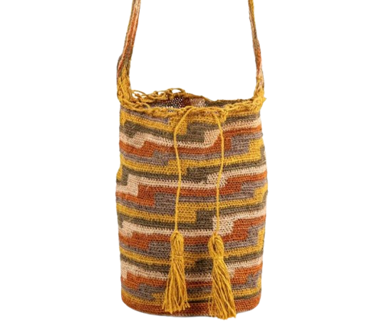
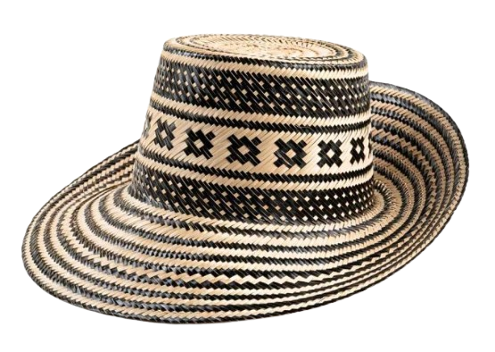
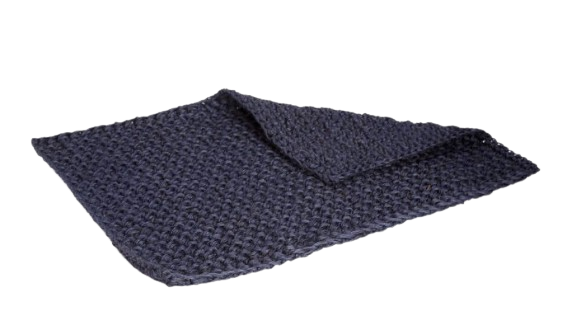
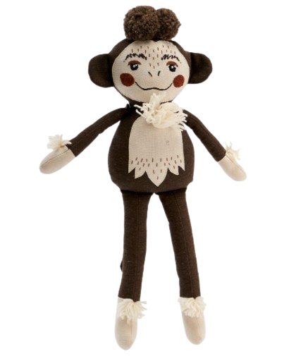

Artesanias
Mochila Kankuama
150.000 $
Mochila en fique Kankuama, tejida por indígenas de la Sierra Nevada. Cada diseño refleja su cultura, tradición y conexión con la tierra.
Sombrero Wayuü
90.000 $
Sombrero Wayúu tejido a mano en palma Mawisa. Un pieza auténtica que resalta tu estilo con identidad cultural y tradición ancestral.
Tapetes
200.000 $
Tapete tejido en fique en la técnica de crochet y en diversos colores. Una pieza que demuestra la riqueza artesanal de Santantander llevada con destreza, a una pieza única para el hogar.
Peluche
200.000 $
Peluche artesanal en forma de mono, elaborado en suave tela. Este encantador muñeco combina ternura y tradición, ideal para acompañar a los más pequeños en sus juegos o decorar espacios con un toque nostálgico.